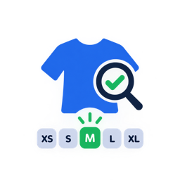

Articles
Long articles on how the AlephB projects work inside: the methods, the numbers, the trade-offs and the mistakes. Each one is written from the project's own notes, tests and measurements, and is signed AlephB, the independent developer behind them (more about AlephB).
The newest are at the top. Five are about building the apps: how Compromise times journeys and ranks places, how it tells sun from shade on a terrace, how its places come from open data, how What's my size? reads sizes from order emails, and how all of them keep personal data on the device. Three are about teaching SQL with The Ritz Affair, and one explains why a fair meeting point is measured in minutes.
- How Compromise ranks places by travel timeWhere the candidate places come from, how each friend's journey is timed, why the ranking minimises the longest trip, and how a search fits in about fifty route requests a minute.22 November 2026
- Is that terrace in the sun?The sun's position, building heights that nobody measured, a shadow ray walked one metre at a time, and where a terrace actually is. What testing in real streets showed.22 November 2026
- Building a worldwide places dataset from OpenStreetMapHow weekly venue tiles for 358 cities are built from open data by one developer: sources, grid, file sizes, closed places, crowd corrections and hosting costs.22 November 2026

Your sizes are already in your inboxReading clothing sizes out of online order emails: finding the orders, reading sizes like 46/M or W32 L34, handling returns, and how Google's Gmail rules shaped the design.22 November 2026- Keeping personal data on the deviceHow four small projects keep addresses, emails and game saves on the user's device, where a server crept in anyway, and what each choice cost.22 November 2026
- The Ritz AffairParis, 1912: a stolen sapphire and a case you solve with SQL. How the twelve chapters follow a first SQL course, how a class plays the game, and how the puzzles are tested against shortcuts.11 October 2026
- Teaching SQL with a detective storyStudents check their query against the correction and never look at the result. A story gives them a reason to read it. What that takes, and what it costs the course.11 October 2026
- How to stop students guessing the answerStudents find answers without the query: from what they already know, by keyword search, with the obvious filter or a plausible guess. How each shortcut becomes a decoy, and how tests keep it closed.11 October 2026
- Fair means time, not distanceThe midpoint between two addresses is often one of the least fair places to meet. Why travel time is the better measure, and why the answer depends on when you go.11 October 2026